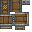

Create: Advanced Logistics
附属模组
Create: Advanced Logistics…
这是什么
Create: Advanced Logistics 是一个正在开发中的 机械动力 模组扩展包，旨在为高级物流系统添加若干实用功能。
命名空间：
createadvlogistics 1.20.1 版本：本页物品与配方直接取自该版本的 jar。全部物品3
Package Content Filtercreateadvlogistics:package_content_filter
Package Wormholecreateadvlogistics:package_wormhole

Redstone Radiocreateadvlogistics:redstone_radio